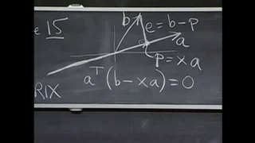
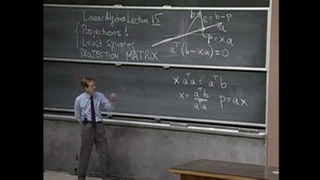
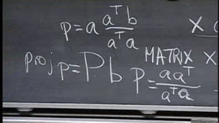

Let \(T\) be a linear transformation from \(\mathbb{R}2 \mapsto \mathbb{R}2\)
which is a projection and suppose that
\begin{equation*}T \left(\begin{array}{r}
3 \\
1
\end{array}\right) = \left(\begin{array}{r}
1 \\
2
\end{array}\right)\end{equation*}
Find the standard matrix of \(T\) (The Projection Matrix).
Figure5.1.2Diagram Of The ProblemFigure5.1.3Professor Strang In ActionFigure5.1.4Projection Matrix Formula
In these screenshots we can see that vector \(\vec{p}\) is the projection of vector \(\vec{b}\) onto \(\vec{a}\).
\(\vec{p}\) is a multiple,\(x\), of \(\vec{a}\):
\begin{equation*}\vec{p} = x \vec{a}\end{equation*}
The error vector \(\vec{e}\) is given by:
\begin{equation*}\vec{e}=\vec{b}-\vec{p}\end{equation*}
The other piece of information we require is that \(\vec{e}\) is perpendicular to \(\vec{p}\).
In other words, the dot product of these two vectors is zero. Recall that the dot product of two vectors is
the same as the transpose of one with the other.
Combining the above gives us:
\begin{equation*}\vec{a}^T (\vec{b} - x \vec{a}) = 0\end{equation*}\begin{equation*}\implies x = \frac{\vec{a}^T \vec{b}}{\vec{a}^T \vec{a}}\end{equation*}
This matches the formula in the screenshot shown in figure 5.1.4 above.
In our exercise \(\textbf{P}\) becomes \(\textbf{T}\).
Now lets see how we can solve this example using SageMath.
One of the most annoying points is that vectors are represented as rows.
Usually, we prefer to write them in column form. However, we can switch the view by
using the column() method on the vector.
The vector \(\vec{a}\) times the transpose of itself can be found by taking the outer_product():
The dot product (inner product) given by \(\vec{a}^T \vec{a}\) is easily found by either of these two steps:
Combining these we get the complete solution for \(\textbf{T}\),
what Strang calls \(\textbf{P}\) as:
These concepts are combined with some fancy plotting methods to give us a nice visualisation of the problem:
Notice that the diagram is upside down compared with Strang's and that we multiplied
\(\vec{a}\) by a factor of 2 so that we could more clearly see that \(\vec{p}\) lies on the same line as \(\vec{a}\).
Let us now check some other properties of the projection matrix \(\textbf{T}\)